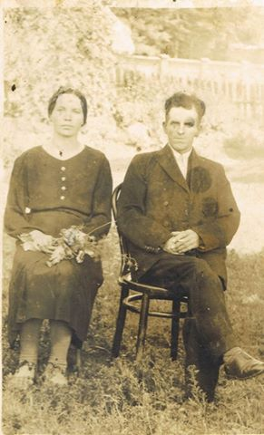
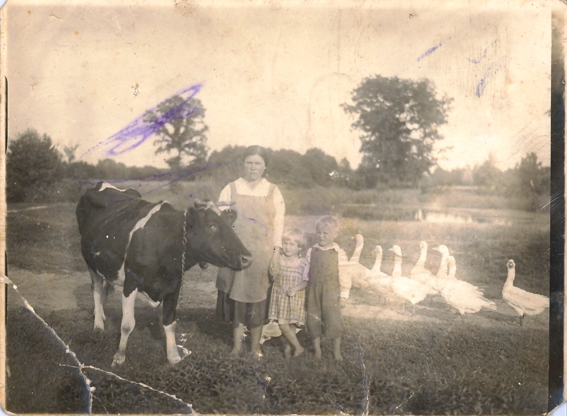
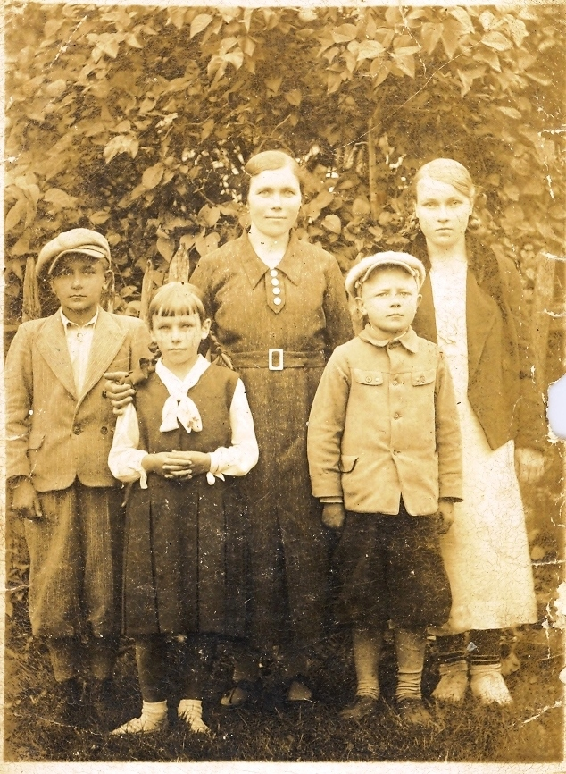
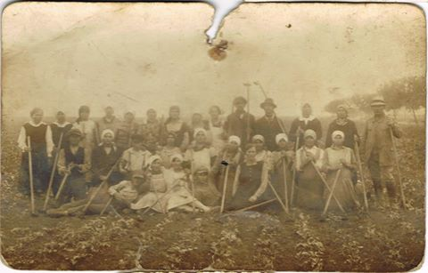
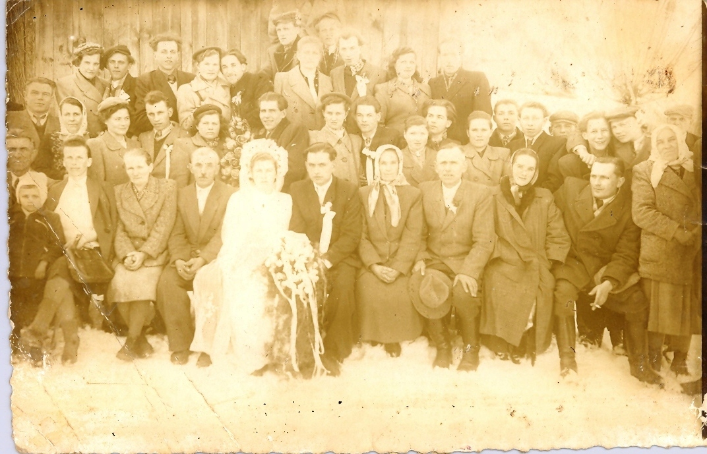
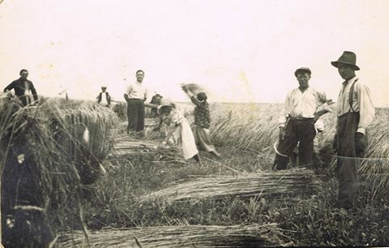
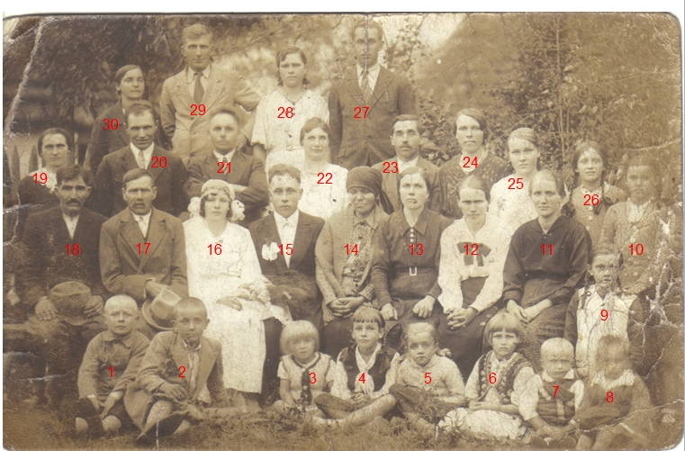
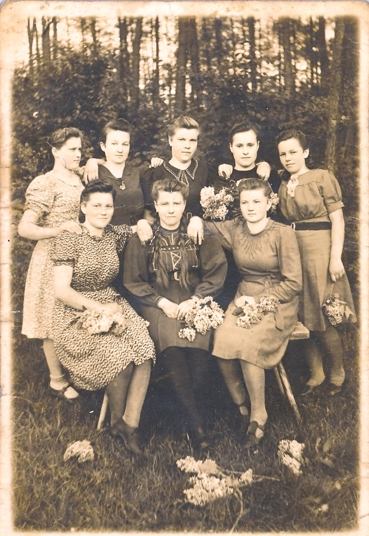

Zdjęcia rodzinne z Dulczy Małej (1920-1950). Rodzina Dudek,
Zieliński, Kużdzał, Schab.
Zdjęcia i tekst: Wiesław Szpyrka.

Bronisława Dudek (1908-1984) i mąż Franciszek Kużdzał (1905-1980). Dulcza Mała.

Maria Zielińska (z d. Dudek) z corka Stefanią i synem Ludwikiem. Nad stawem w Dulczy Małej. Dulcza
Mała ok. 1931 r.

Maria Zielińska (z d. Dudek) z siostra Honorata Schab (z d. Dudek) oraz dziećmi Tadeuszem Stefania i
Ludwikiem. Dulcza Mała ok. 1935 r.

Wykopki u Józefa Zielińskiego. Dulcza Mała ok. 1925 r.

Wesele w rodzinie Dudków. Dulcza Mała ok. 1925 r.

Żniwa u Józefa Zielińskiego. Dulcza Mała ok. 1934 r.

Ślub Kazimierza Dudek(1906-1971) z Anną Kurgan(1912-1987). Dulcza Mała ok. 1935 r.
1.Ludwik Zieliński, 2.Tadeusz Zieliński, 4.Stefania Zielińska,
11.Honorata Schab (z d. Dudek), 12.Katarzyna Golec (z d. Dudek),
13.Maria Zielinska (z d. Dudek), 14.Tekla Dudek (Giża),
23.Franciszek Kuzdzał, 24.Bronisława Kużdzał (Dudek), 25.Anna Dudek.

Dziewczęta z Dulczy Małej. Pierwsza z prawej w górnym rzędzie o Stefania Zielińska (córka Marii
Zielińskiej z domu Dudek). Pierwsza z lewej w dolnym rzędzie siedzi Helena Pawełczak z domu Tomala
(informacja przesłana przez Monika Pawełczak - wnuczkę, 23.01.2021). Dulcza Mała ok. 1944 r.